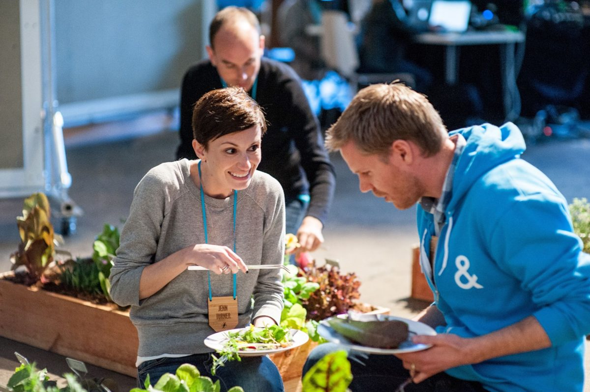

Developer voice guide for a popular CDN
1,000+ people relied on it across the company
I created and curated the developer voice guide for a popular CDN. It's still in use today and became a crucial reference for cross-team collaboration across a company of 1,000+ people.
Read an excerpt of the CDN voice guide (PDF, opens in a new tab)
Voice & tone guide for a collaborative coding platform
I curated the voice and tone guide for a collaborative coding platform and its community, so staff and community voices could sound like the same place.
Read an excerpt of the coding platform’s voice & tone guide (PDF, opens in a new tab)
Newsletters at developer scale
9M+ npm subscribers
5M+ Glitch developers
I wrote weekly for the npm community for several years, helping grow the audience from 7 million to 9 million+ subscribers. I also wrote monthly for the Glitch newsletter, reaching a community of 5 million+ developers. I built audience-specific newsletters and kept testing content with test audiences, so what we sent was based on what readers responded to, not guesses.
Events & audio

I've coordinated developer conferences, and I write for and produce audio. Hear me talk about why writers belong in open source communities on the SustainOSS podcast.